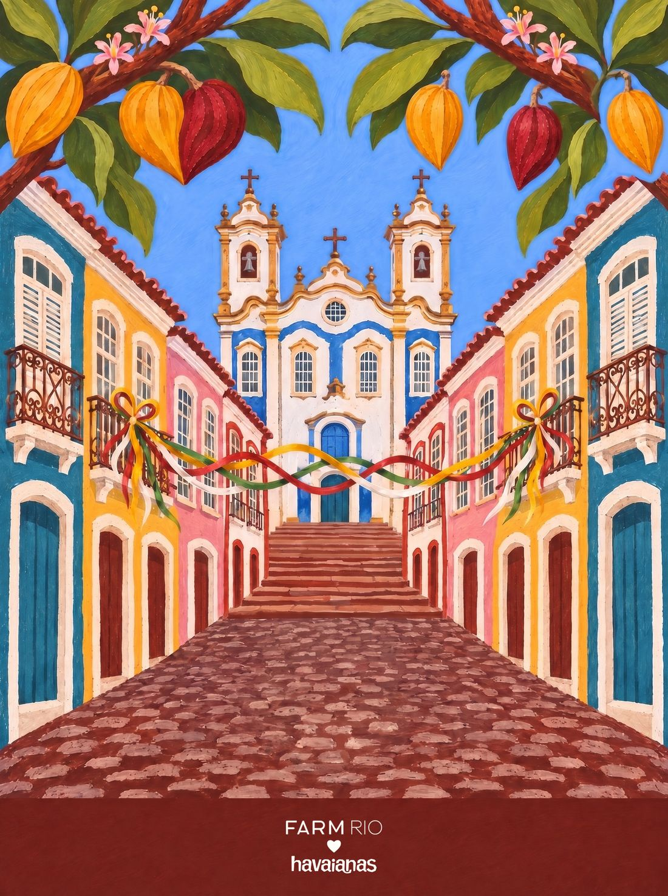
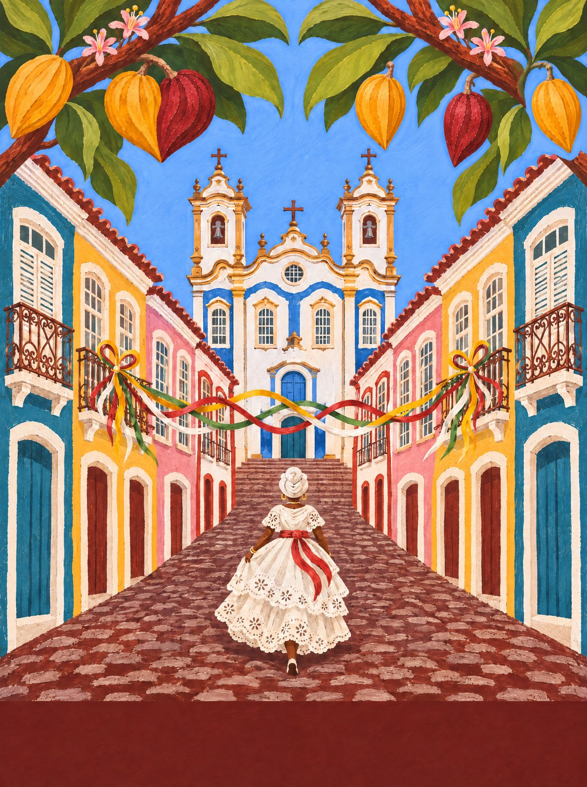
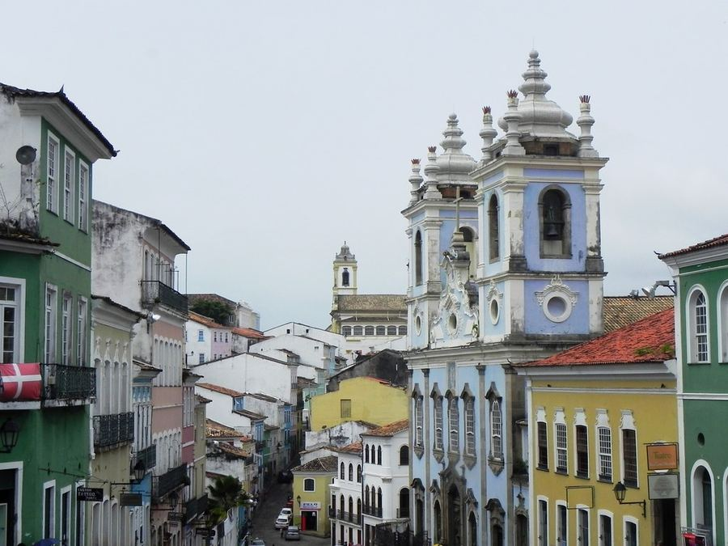
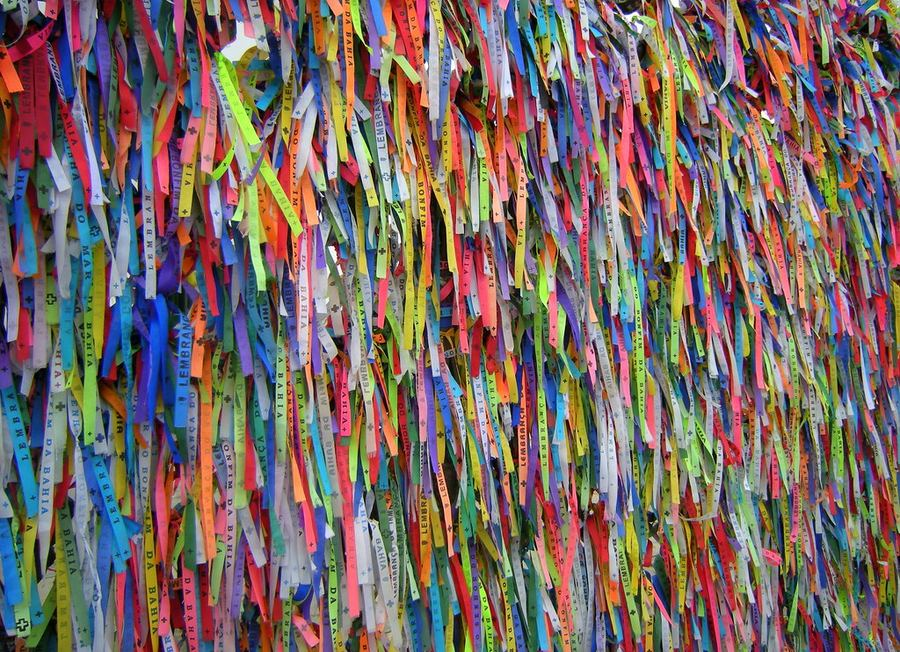
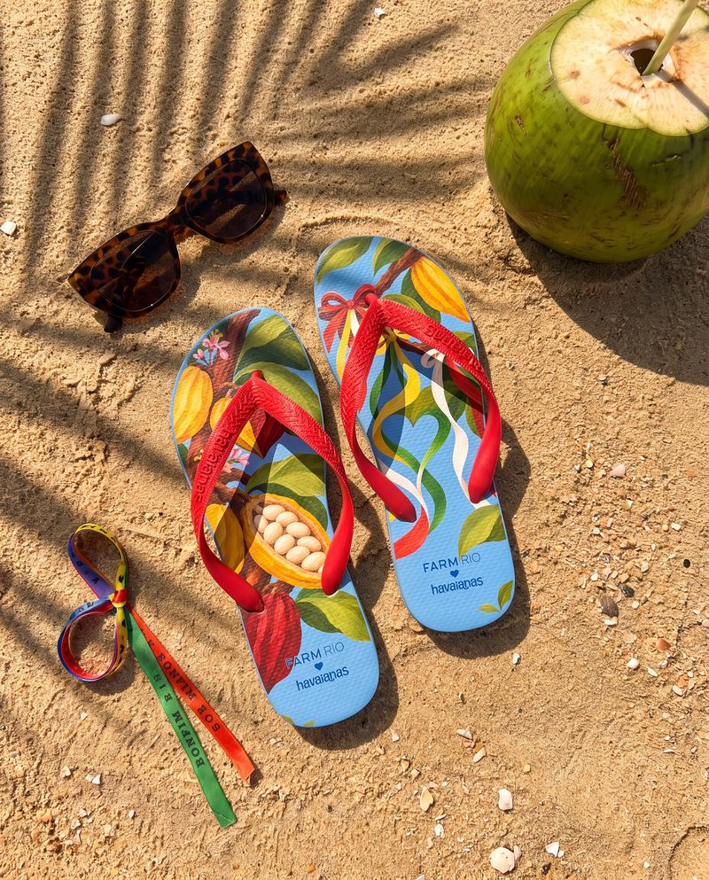
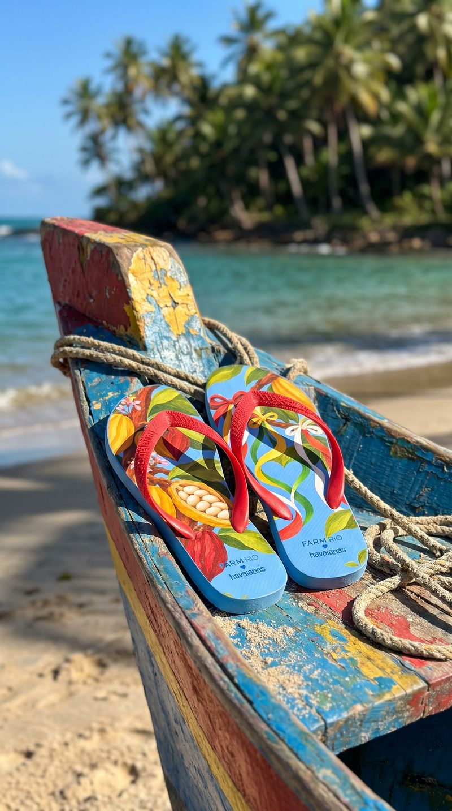

Bahia
Cacau e Fita
O sul da Bahia que dá o cacau e a Salvador que amarra fita no portão do Bonfim, juntos no mesmo par.
03 / 14 · Nordeste


o coração
Encontre o coração
Ele não está desenhado em cima de nada. Aparece quando os próprios elementos da cena se encontram. Procure na ilustração e toque nele.
♥ dois cacaus, um amarelo e um vinho, de pontas encostadas


o par
Dois pés, uma história
na palmilha
pé esquerdo com o galho de cacau e um fruto aberto; pé direito com as fitas do Bonfim, sem letreiro, descendo em ondas.
borracha e tira
azul do céu de Salvador; tira vermelho-fita.
a arte da palmilha

caderno de campo
Salvador começa no alto do Pelourinho, com casarões cor de bala (rosa, amarelo, azul, verde) e termina no tabuleiro da baiana, de saia rodada e turbante branco, com cheiro de dendê no ar. As fitas do Senhor do Bonfim balançam amarradas no gradil, cada uma com um pedido; na Lavagem, as baianas sobem a colina com potes de água de cheiro. O tambor ecoa nas ladeiras, o Elevador Lacerda liga a cidade alta à baixa, e no sul do estado o cacau amadurece na sombra da mata.
oxe · oxente · massa! · barril · painho · mainha · ó paí, ó
trilha · O que é que a baiana tem? (Dorival Caymmi) · tambores no Pelourinho · o berimbau da roda de capoeira
A âncora: a fita do Senhor do Bonfim, que qualquer brasileiro reconhece de longe.
pesquisa de campo
Na rua, antes do desenho



campanha
O par no lugar



o que ficou de fora
O que a gente evitou
- 01
Orixás e Iemanjá como enfeite: são divindades do candomblé, não estampa.
- 02
Fita com texto escrito: vira souvenir; a fita entra só como cor.
- 03
Baiana como fantasia de carnaval: o ofício é patrimônio; entra a saia rodada e a renda, com respeito.
 ← Rio de Janeiro
← Rio de Janeiro